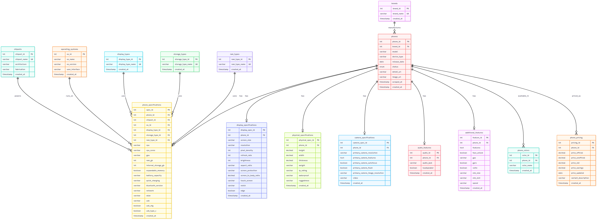
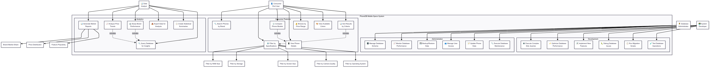

PhoneDB / project showcase
A clearer path through smartphone choice overload.
A structured catalogue turns hundreds of specifications, variants, and trade-offs into a shortlist people can actually reason about.

A catalogue row, made legible.
01 / The problem
The hard part is not finding specs. It is comparing the trade-offs.
A phone can look compelling on one dimension and miss the brief on another. PhoneDB makes the constraints visible before a decision gets made.
From a large, messy catalogue to a small set of devices worth a closer look.
Hundreds of models, variants, and release states.
Specifications spread across inconsistent formats.
Real choices require balancing price and priorities.
02 / The workflow
A visible route from preference to comparison.
The interface is intentionally transparent. A user can see where the shortlist came from, inspect the underlying record, and compare the remaining trade-offs.
-
01
Describe the brief
Choose supported priorities such as price, brand, RAM, storage, battery, display, or chipset.
-
02
Make the query explicit
A typed request reaches the API, where ranges, pagination, IDs, and sort fields are validated.
-
03
Reduce the catalogue
Parameterized MySQL queries return a deterministic shortlist and a count that agrees with the result set.
-
04
Inspect the trade-offs
Open details, review variants and colours, then compare up to four devices side by side.
03 / The demonstration
Try the shape of a shortlist.
This small, static showcase uses representative rows from the checked-in CSV. It mirrors the decision pattern without pretending to call the local API.
04 / The dataset
A wide schema, made useful by structure.
The seed file carries the raw breadth of the catalogue. The database separates reusable lookup values from device-specific facts so the application can query it consistently.
Measured from the current CSV snapshot. Percentages describe field presence, not data accuracy.

05 / The engineering
A small system with clear boundaries.
The showcase is static. The product runtime remains a local Next.js frontend, Express API, and MySQL catalogue with explicit operational boundaries.

Typed at the edge
Frontend response types and backend validation keep the browse, detail, and comparison contracts aligned.
Safe by default
Credentials come from the environment, SQL is parameterized, diagnostics are development-only, and reset commands are guarded.
Observable enough
Request IDs, structured logs, liveness, readiness, and bounded error envelopes make failures easier to locate without exposing parameters.
06 / The project surface
Interesting work lives between the layers.
CSV parsing, typed value cleanup, lookup caching, idempotent upserts, and variant preservation.
Factory-based Express composition, request IDs, strict validation, health endpoints, and a single database pool.
Responsive browse, details, comparison, retry states, accessible navigation, and typed API-client behavior.
Forward-only migrations, checksums, advisory locking, safe reset boundaries, and development-only query diagnostics.
07 / Honest boundaries
A credible project leaves room for what comes next.
The current repository is a read-focused catalogue and comparison system. It is not presented as a live deployment, a continuously refreshed market feed, or an automatic ranking engine.
Future work could add an explicit scoring specification, a reproducible collection pipeline, stronger data-quality reporting, and carefully designed write and identity boundaries.
Read the technical limitationsPhoneDB / continue exploring